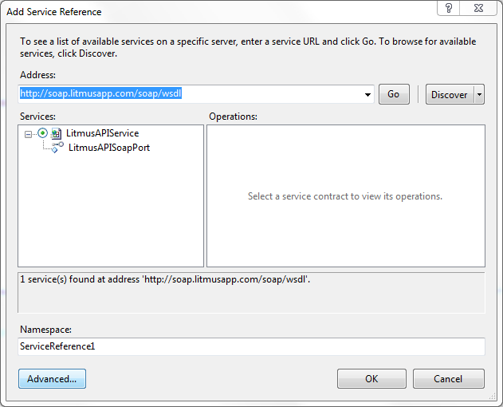

In .NET 3.0 Microsoft began moving away from Web Services and specific protocols (such as SOAP) and instead began to focus on "Services" and their WCF framework.
As a result, .NET 3.0+ projects in Visual Studio no longer offer the ability to add a tradional Web Reference using the usual tools.
Litmus' Web Service is fully compatible with a Service Reference client, however, so that you can follow these tutorials, we strongly recommend using a traditional Web Reference instead.
To add a traditional Web Reference, right-click your project in the Solution Explorer and select "Add Service Reference". On the service reference dialog, select "Advanced", as shown below.

In the Advanced dialog, select the "Web Reference" button to add a traditional web reference.
You should now be able to add a traditional Web Reference and follow the documentation (and example code) for Litmus' Web Service.